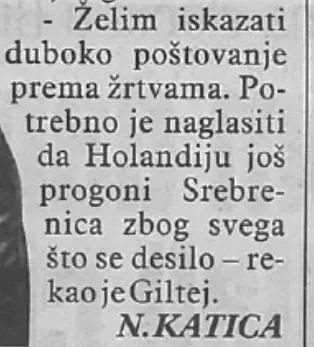

Prueba · Artículo
Entrevista con Giltay en Dnevni avaz, 11 de julio de 2017
El pasaje
«Quiero expresar mi profundo respeto por las víctimas. Hay que subrayar que Srebrenica sigue persiguiendo a los Países Bajos por todo lo que ocurrió». Página 1, las últimas líneas del artículo, en la columna derecha junto a la foto, encima de la firma. Traducido del bosnio; el texto original figura a continuación.
Texto original
“Želim iskazati duboko poštovanje prema žrtvama. Potrebno je naglasiti da Holandiju još progoni Srebrenica zbog svega što se desilo.” El periódico introduce las palabras de Giltay con una raya en lugar de comillas y las cierra con «rekao je Giltej» (dijo Giltay); ninguna de las dos cosas se reproduce aquí. El texto sigue la página impresa; las palabras partidas a final de línea se han unido. El artículo escribe el nombre «Edvin Giltej», con la grafía neerlandesa «Edwin Giltay» entre paréntesis, y da el título del libro como Prikriveni general (el general oculto); este sitio web utiliza General zataškavanja.

Por qué importa este documento
En Dnevni avaz del 11 de julio de 2017, día de la conmemoración, veintidós años después del genocidio, Giltay afirma que el Ministerio de Defensa neerlandés sigue aferrado a la versión de que los rollos de película se destruyeron por accidente. Según él, casi nadie se lo cree. Añade que espera que, tras el receso parlamentario de verano, el Parlamento decida citar a la ministra de Defensa para que zanje el asunto de una vez por todas. Al final, expresa su respeto por las víctimas y dice que Srebrenica sigue persiguiendo a los Países Bajos. El titular está tomado de esas palabras. El ensayo incluye la entrevista en la cobertura informativa de la presión parlamentaria de 2017.
Procedencia
- Documento
- Entrevista de prensa, una página, escaneada del periódico impreso
- Publicación
- Dnevni avaz, diario bosnio, página pogledi (opiniones)
- Sección
- RAZGOVOR · Autor zabranjivane knjige o genocidu (entrevista · el autor de un libro prohibido sobre el genocidio)
- Titular
- «Edvin Giltej: Srebrenica još progoni Holandiju» (Edwin Giltay: Srebrenica sigue persiguiendo a los Países Bajos)
- Subtítulo
- «Vrijeme je da se moja zemlja suoči sa svojom prošlošću, rekao Giltej» (es hora de que mi país se enfrente a su pasado, dijo Giltay) · «Želi iskazati duboko poštovanje prema žrtvama» (quiere expresar un profundo respeto por las víctimas)
- Intertítulos
- «Prikrivanje dokaza» (ocultación de pruebas) y «Pozvati ministra» (citar al ministro), con un recuadro bajo el título «Važna priča koja je morala biti ispričana» (una historia importante que había que contar)
- Autor
- Nihad Katica, que firma en el periódico como N. Katica
- Fecha
- 11 de julio de 2017
- Persona entrevistada
- Edwin Giltay, escrito «Edvin Giltej» en el artículo, autor de De doofpotgeneraal, título que el periódico da como Prikriveni general (el general oculto)
- Tema
- El batallón neerlandés en Srebrenica, los rollos de película que desaparecieron en un laboratorio de La Haya y el intento de que el Parlamento neerlandés se ocupara del caso
- Referencias
- Khadija Arib, presidenta de la Cámara de Representantes; la Comisión Permanente de Defensa; la ministra de Defensa; y la sentencia dictada poco antes en La Haya que consideró a los Países Bajos parcialmente responsables de la muerte de 350 personas de Srebrenica
- Ilustraciones
- Una foto de Giltay con el libro, con el crédito (Foto: R. Dresia) y el pie «Giltej: Nadam se da će se nakon ljeta riješiti ova avantura» (Giltay: espero que esta aventura se resuelva después del verano), y la cubierta del libro con el pie «Zabranjivana knjiga “Prikriveni general”» (el libro prohibido «Prikriveni general»)
- Idioma
- Bosnio
- Fuente
- Imagen escaneada publicada en dedoofpotgeneraal.nl como doc/dnevniavaz2017.pdf
Citado en: el ensayo «La prohibición cayó, el libro quedó en pie» en el capítulo (5) «Más que un libro prohibido».
Ficha de prueba: https://
Documento: https://
Modificado por última vez el 25 de noviembre de 2026, consultado el 26 de noviembre de 2026.

Esta página es una ficha de prueba del libro El general del encubrimiento de Edwin Giltay y del sitio web que lo acompaña.